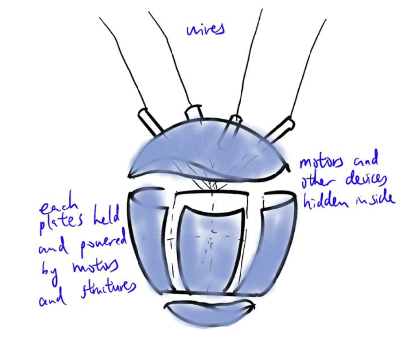
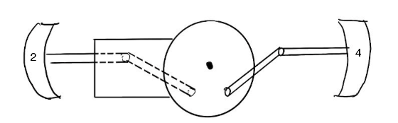

Design Goals:
The project aims to bridge the gap between users and their health metrics by creating 'iHeart', a device that
simplifies and presents heart rate data in an intuitive and engaging manner. This involves developing a 3D printed
model that dynamically represents the heart's activity in real-time using input from a wearable sensor. The model,
equipped with mechanical components such as stepper motors and pulley systems, simulates the heart's natural beating,
controlled by an Arduino Mega microcontroller interpreting heart rate data. Integrated RGB LEDs provide visual cues for
different heart rate zones. Structural stability and aesthetic appeal are ensured through the use of platforms.
Overall, 'iHeart' seeks to enhance user comprehension and interaction with their cardiovascular health metrics for
everyday monitoring.

Design and Segmentation:
The iHeart project involves creating a physical representation of the human heart comprising six interconnected
components, each representing different sides of the heart, with three static platforms aiding in structural support
and organization. The design aims to accurately depict the complexity of the heart while facilitating dynamic movement
during contraction and expansion, providing visual feedback on heart rate zones, and enabling observation of all
sides of the heart through continuous 360-degree rotation. By dividing the heart into six sections, the project enables
the simultaneous visualization of contraction and expansion, enhancing user understanding of heart rate dynamics.
Motor allocation is strategically optimized to ensure efficient synchronization and stability, with two motors
controlling two sides of the heart each, while the bottom section operates independently to replicate natural
cardiac motions. The topmost side of the heart remains static, with wiring and power components housed in platforms
above, maintaining visual clarity. Furthermore, the inclusion of a motor for 360-degree rotation is strategically
positioned to allow movement without interference with other components, enhancing the project's functionality and
user experience.

Prototype
Motorized Movement and Platform Within Heart: We incorporate three stepper motors into our product.
Two motors control the expansion and contraction of the side panels, each motor responsible for two panels that
face each other. One motor controls the movement of the bottom panel. The movement of each of the 4 side panels is
facilitated by a pulley system mechanism, translating rotational motion into vertical movement to simulate the heartbeat
using the stepper motors.
For example, one motor will drive side 2 and 4 of the heart by connecting itself to each side’s pulley systems,
moving both at the same time. This will be replicated for sides 1 and 3 of the heart too. The bottom side will be
independently controlled. The interconnected pulley systems ensure synchronized movement of the panels, replicating
the natural contraction and expansion of the human heart chambers. These motors and the mechanism that control them
will be placed on a separate platform within the heart, suspended from the wire on top.